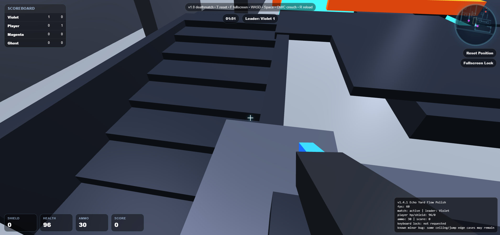
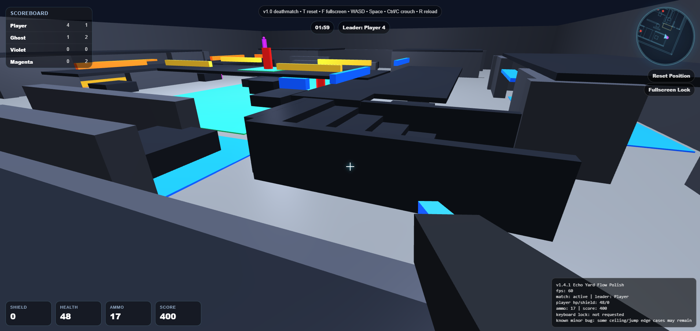

Arena FPS. v1.7.6. Multiplayer is planned, not in this build.
Build: arena-fps-v1-7-6.html


Development captures, not polished gameplay footage. Cover art stays on the floor card and hero.
WASD / mouse. Stair stills are debug, not a trailer.
Need a real in-match screenshot and a short clip later.
Comments / profiles / saves — not built. Version history will live here.